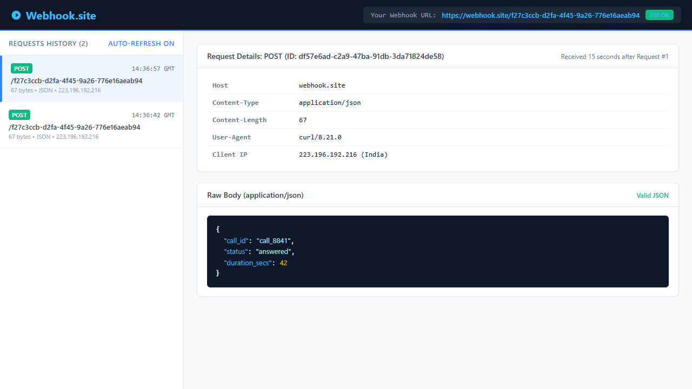

on_call_answered started a 45s silence timeout timer (on_no_response_timeout).failed, set attempts=1, and queued a retry for 30 minutes later (run_after_minutes=30).on_call_ended marked state completed (running twice due to duplicate webhooks), but never dequeued or cancelled the pending retry.run_job executed and dialled the patient without checking if job.state == "completed".run_job: run_job unconditionally dials without checking if the job is already completed.on_call_ended does not cancel pending retry jobs in the queue.attempts to 3.Track active timer handles by job_id and cancel them whenever speech is detected or the call terminates:
def on_caller_spoke(job_id):
timer.cancel(job_id)
def on_call_ended(event):
timer.cancel(event["job_id"])
job = db.get_job(event["job_id"])
...https://webhook.site/f27c3ccb-d2fa-4f45-9a26-776e16aeab94
# Request 1: Initial "call ended" webhook
curl.exe -i -X POST https://webhook.site/f27c3ccb-d2fa-4f45-9a26-776e16aeab94 \
-H "Content-Type: application/json" \
-d '{"call_id": "call_8841", "status": "answered", "duration_secs": 42}'
# Request 2: Duplicate "call ended" webhook (identical payload)
curl.exe -i -X POST https://webhook.site/f27c3ccb-d2fa-4f45-9a26-776e16aeab94 \
-H "Content-Type: application/json" \
-d '{"call_id": "call_8841", "status": "answered", "duration_secs": 42}'Both requests arrived 15 seconds apart at 14:36:42 GMT and 14:36:57 GMT:

POST), identical client IP (223.196.192.216), identical Content-Length: 67, and identical JSON body matching on call_id: "call_8841", status: "answered", and duration_secs: 42. When consecutive requests arrive with identical payloads for an existing entity, it represents a duplicate delivery.Idempotency-Key: evt_8841_call_ended_01, allowing O(1) cache lookups.X-Delivery-Attempt: 2 and X-Event-Timestamp: 1791297402.In HTTP webhook delivery, identical business events invariably arrive with distinct transport-level metadata (such as server-assigned X-Request-Ids and unique TCP socket ports). Relying on transport metadata is insufficient—deduplication must be enforced at the business logic layer using domain keys. Additionally, Windows PowerShell strips raw double quotes from JSON strings passed to CLI tools, requiring explicit single-quoting or binary streaming.
from fastapi import FastAPI, HTTPException
from pydantic import BaseModel
from typing import Optional
app = FastAPI()
calls_db = {}
class CallEndedPayload(BaseModel):
call_id: Optional[str] = None
status: str
duration_secs: int
@app.post("/call-ended")
def call_ended(payload: CallEndedPayload):
if not payload.call_id:
raise HTTPException(status_code=400, detail="Missing call_id")
if payload.call_id in calls_db:
return {"status": "success", "message": "Call already recorded", "data": calls_db[payload.call_id]}
record = payload.dict()
calls_db[payload.call_id] = record
return {"status": "success", "message": "Call recorded", "data": record}
@app.get("/calls/{call_id}")
def get_call(call_id: str):
if call_id not in calls_db:
raise HTTPException(status_code=404, detail="Call not found")
return calls_db[call_id]app.py)import sqlite3, os
from contextlib import asynccontextmanager
from typing import Optional
from fastapi import FastAPI, HTTPException, Request, Response, status
from fastapi.exceptions import RequestValidationError
from fastapi.responses import JSONResponse
from pydantic import BaseModel, Field, field_validator
def get_db_path() -> str:
return os.getenv("DB_PATH", "calls.db")
def init_db(db_path: Optional[str] = None):
with sqlite3.connect(db_path or get_db_path()) as conn:
conn.execute("""
CREATE TABLE IF NOT EXISTS calls (
call_id TEXT PRIMARY KEY,
status TEXT NOT NULL,
duration_secs INTEGER NOT NULL,
created_at TIMESTAMP DEFAULT CURRENT_TIMESTAMP
)
""")
conn.commit()
@asynccontextmanager
async def lifespan(app: FastAPI):
init_db()
yield
app = FastAPI(title="Logictap Call Recording Service", lifespan=lifespan)
@app.exception_handler(RequestValidationError)
async def validation_exception_handler(request: Request, exc: RequestValidationError):
for err in exc.errors():
if "call_id" in err.get("loc", ()):
return JSONResponse(status_code=400, content={"error": "Bad Request", "detail": "call_id is required and cannot be empty"})
return JSONResponse(status_code=400, content={"error": "Bad Request", "detail": exc.errors()[0].get("msg", "Invalid request body")})
class CallEndedPayload(BaseModel):
call_id: str = Field(..., min_length=1)
status: str = Field(..., min_length=1)
duration_secs: int = Field(..., ge=0)
@field_validator("call_id")
@classmethod
def call_id_must_not_be_blank(cls, v: str) -> str:
if not v or not v.strip():
raise ValueError("call_id cannot be empty or whitespace")
return v.strip()
def get_db_connection():
conn = sqlite3.connect(get_db_path())
conn.row_factory = sqlite3.Row
return conn
@app.post("/call-ended")
def record_call_ended(payload: CallEndedPayload, response: Response):
conn = get_db_connection()
try:
cursor = conn.cursor()
cursor.execute(
"INSERT OR IGNORE INTO calls (call_id, status, duration_secs) VALUES (?, ?, ?)",
(payload.call_id, payload.status, payload.duration_secs)
)
conn.commit()
if cursor.rowcount == 1:
response.status_code = status.HTTP_201_CREATED
return {"success": True, "message": "Call record created successfully", "call_id": payload.call_id, "is_duplicate": False}
else:
response.status_code = status.HTTP_200_OK
return {"success": True, "message": "Duplicate call received; existing record preserved", "call_id": payload.call_id, "is_duplicate": True}
finally:
conn.close()
@app.get("/calls/{call_id}")
def get_call_record(call_id: str):
conn = get_db_connection()
try:
cursor = conn.cursor()
cursor.execute("SELECT call_id, status, duration_secs, created_at FROM calls WHERE call_id = ?", (call_id,))
row = cursor.fetchone()
if not row:
raise HTTPException(status_code=404, detail=f"Call record with ID '{call_id}' not found")
return {"call_id": row["call_id"], "status": row["status"], "duration_secs": row["duration_secs"], "created_at": row["created_at"]}
finally:
conn.close()PRIMARY KEY (call_id) and atomic INSERT OR IGNORE, eliminating race conditions when duplicate webhooks arrive simultaneously.call_id and non-negative duration_secs, intercepting schema validation to return standardized HTTP 400 Bad Request responses.test_app.py)def test_repeated_request_does_not_create_second_record():
payload = {"call_id": "abc123", "status": "answered", "duration_secs": 42}
# 1. First request
resp1 = client.post("/call-ended", json=payload)
assert resp1.status_code in [200, 201]
assert resp1.json()["success"] is True
with sqlite3.connect(TEST_DB) as conn:
cursor = conn.cursor()
cursor.execute("SELECT COUNT(*) FROM calls WHERE call_id = ?", ("abc123",))
assert cursor.fetchone()[0] == 1
# 2. Second request with the exact same payload
resp2 = client.post("/call-ended", json=payload)
assert resp2.status_code == 200
assert resp2.json()["success"] is True
# Verify that NO second record was created
with sqlite3.connect(TEST_DB) as conn:
cursor = conn.cursor()
cursor.execute("SELECT COUNT(*) FROM calls WHERE call_id = ?", ("abc123",))
assert cursor.fetchone()[0] == 1Pytest Result: 4 passed in 0.78s
In Version 1, the AI implemented an in-memory dictionary check (if call_id in calls_db:) for deduplication. This was flawed because under concurrent webhook arrivals (like the dual 10:03:52 events in Part 1), an in-memory check without database locking suffers from a race condition where both requests can evaluate to false before either writes. It also meant all records would disappear upon server restart. I replaced this with an SQLite database using an atomic PRIMARY KEY and INSERT OR IGNORE query, delegating idempotency guarantees to the database engine.
Pinpointing how an uncancelled silence timeout silently enqueued a delayed retry that later triggered without checking the call's updated "completed" state.
48 minutes (Part 1: 15 min, Part 2: 12 min, Part 3: 18 min, Part 4: 3 min).